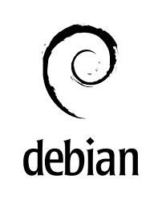

Informations Personelles
Clavis Tom / 21 ans / Email : tomclavis@laplateforme.io / Tel : 0782070217 / Ville : Marseille
Objectif / Expériences / Formations
Objectif professionel : Devenir Data Proctection Officer
Expériences professionelles : Cascadeur/Acteur pour Amazon Prime - Novembre 2022
Acteur pour TF1 - 2021/2022
Formations et études : Baccalauréat ES - 2020 / Cours florent - 2021/2023 / La Plateforme - 2023
Mes Compétences
-Debian
-Bash
-VmWare
-Cisco Packet Tracer